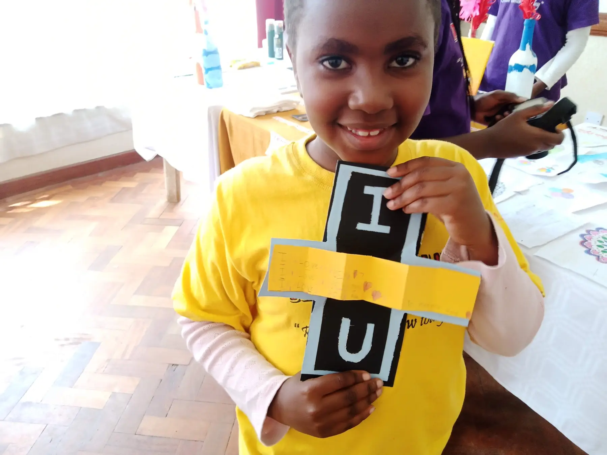

Hello again there. Thank you for coming back to hang out with us. Let us take you through the 30th of June AKA Career Talk Day.
On arrival we had a mini-treasure hunt. We searched for the hidden candy around the gazebo and the classroom.
Trust in the Lord with all your heart and lean not on your own understanding. In all your ways acknowledge Him and He will make your paths straight.
Proverbs 3:5-6
By this time most of the guys had already arrived. So we prayed and did the devotion. We always start with God.
After the devotion we did a challenge, namely A Word Puzzle and as the theme of the day states, today was the career day. So, guys got a chance to practice how to set up their shops.
By the time we were done, we realized that it was already tea time. So we washed our hands and made a queue to receive our delicious snacks. Ooh, our lovely parents also started coming in to join us.
After the refreshments, we rushed outside to play a fun game with our parents.
That was fun! We settled back in class, and sat around a table. As a warm up, we played a quick concentration game. How nice!
The main event of the day was finally here with us, career talk! From one to the next, our parents engaged with us on what they really do for a living. We had talks on careers such as: cyber-security,
law,
marketing,
and banking.
The limelight quickly switched on to us as the parents were eager to hear us talk about our dreams and aspirations in life.
To wrap it all up, the parents left us with one powerful and simple advice, Dream big, you can be whatever you want. The career talk was really sensational for each one of us. We honestly enjoyed it a lot. Like every other Amazing Kids day, we had to do a creative project.
We made a card made out of manila paper and glue. Inside the card we glued in a handwritten note dedicated to a loved one.
The craft project turned out great. It was hard not to notice the beautiful moments of kids and parents teaming up and bonding while doing it.
After which we finally set up our shops as we had practiced earlier only this time it was for the real thing. To set the stage, we introduced ourselves, the amount of savings we had made so far, how we got the savings and what we were selling. After the sales pitch, guys were all ready and the buying and selling commenced. Guys really did put those skills learnt during the money lessons into good use.
The day finally came into an end but we dare say that the season objective of learning about money and putting those skills to test was well accomplished. The parents congratulated the kids for their effort then went ahead to pray for us as we all headed home a happy bunch.